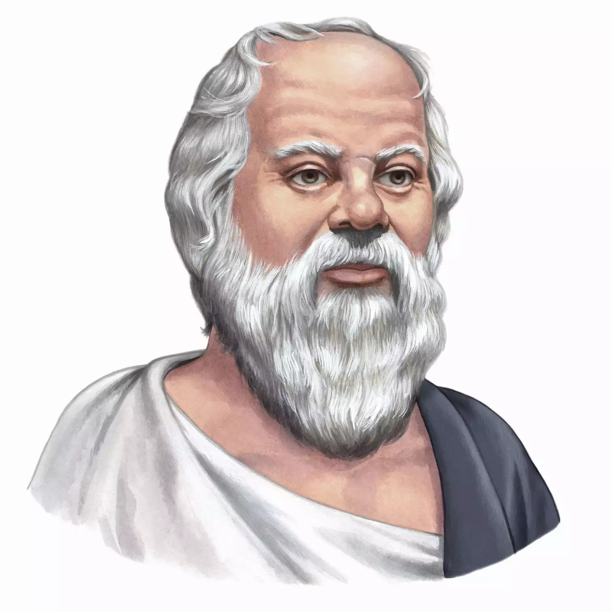

SMILES GRIN LAUGH
Learn from the pros

Adam Smith is the father of Economics. Born on 28th Dember 1903 and died on 8th April 1985

Shakespeare is the father of English language. He invented lots of used English words. He was born on 23rd April 1564 and died on 23rd April 1616.

Socrates is a Greek phylosopher considered to be the father of Phylosophy. He was born on C. 470 bce and died on 15th February 399 BC due to poison.

Wihlem Wilhelm Wundt is the father of psychology. He invented lots of used psychological theories. He was born on 16th Augus 1832 and died on 31st August 1920.